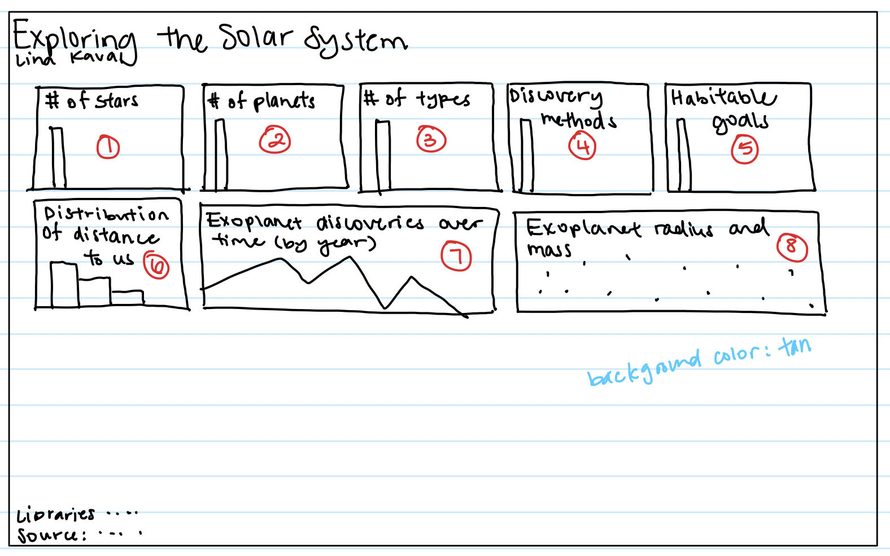

Project 1 - Visualizing NASA Exoplanet Data for CS 5124
Introduction
The point of this project was to be able to interact with a dashboard consisting of data from NASA's exoplanet research. Many exoplanets are being discovered every year, and while NASA has this information in tabular form, it can be hard for people to understand questions such as "How far is this exoplanet from us?", "How big are exoplanets compared to Earth?". My dashboard can answer these questions, as well as other questions someone may have.
The Data
The data was sourced from a public data repository on exoplanets. However, at first glance, it was hard to understand what the column names were supposed to be (ex: sy_snum, pl_rade). I relied on the documentation page to understand what each column was supposed to represent and the units associated with the data.
I also referenced this page to find the radius and mass of the planets within our system. It was confusing at first, since I wasn't sure what an Earth radius was. I learned a lot about the ways of describing planets through my research.
Sketching
I found it incredibly useful to sketch my designs and determine which columns would be associated with each chart. I am normally someone who likes to dive in and start working, but sketching my data helped me realize what limitations I would face before I would face them.
Initial Sketch
When I was first looked at this assignment, I thought "wow, there will be a lot of charts I have to put on one page." However, in this sketch, it looked like everything would fit, and even have left over space! Sad to say, that did not happen. However, I referred to this as I started positioning my charts as I build them.



Second iteration of sketches
After creating all my bar charts and simpler charts, I realized that especially for my line chart, scatterplot, and discovery methods barchart, it made more sense to spread out the data. These charts had longer x-axes so that the data wouldn't be so scrunched up, which also makes it easier for the user to read.


Sketch of System Browser
While I did not get around to completing the Exoplanet System Browser the way I wanted, I had thought about what the layout should look like.

Visualization Components
Full Dahsboard View

Barcharts
The visualizations below all use the barchart.js class. Each barchart is capable of being clicked on in order to filter data and update with the same data on the rest of the bar charts. Hovering on the bars displays the data of how many exoplanets belong to that category. Although it may have been a better idea to add a y-axis label, I thought it would look to clunky - and would not have meant much since all of my barcharts had the same y-axis units. Instead, I opted to make my chart titles very specific and framed as a question, so that the user could more easily understand what I am trying to show here.
Another design decision I made was to filter out all rows that had missing values for certain fields. Since all of my visualizations are connected, I thought it could be misleading to the user if, for instance, there are only 1000 total exoplanets with valid star types, while there are 3000 total exoplanets with habitable/inhabiltable data. The user may be confused why there are different counts of exoplanets. To give my users the options of seeing all exoplanets, with the knowledge that there could be missing data, I added a checkbox to the top of my page where users can toggle whether to use all data or not.


Histogram
The visualization below uses the histogram.js class. To create cohesion across my visualizations, I made this histogram the same color as my barcharts. Similar to the barchart, hovering over the bar shows a description of the data and the count of planets. The histogram is also hooked up to the user's click filtering and my custom mising data filter. I decided to create a histogram with 20 bins, unlike the default 70, since having that many bars is not readable to the user.

Linechart
The visualization below uses the linechart.js class. This was modified from the example provided by the instructor. Similarly with the barchart and histograms, I did not clutter my chart with axis titles, since reading the title will quickly inform the user as to what the linechart means. When a user hovers over the chart, the year and number of exoplanets can be viewed. The filters also apply to the linechart.

Scatterplot
The visualization below uses the scatterplot.js class. Each exoplanet is plotted by the log of its radius and the log of its mass. Additionally, I sourced info for the planets in our solar system and added that to my scatterplot, shown in orange. When a user hovers over a circle, the circle darkens and the tooltip shows up, showing the user data on the exoplanet they selected. Clicking on the data point will open up the Exoplanet System Browser, which will be discussed further in a later section.

Table
The visualization below uses the table.js class. This is a class I created to handle using the Tabulator library, for both loading the data in and creating the table. Although another option was to create an html table from scratch, using a library makes it easier to deal with the formatting - and not have to "reinvent the wheel". The arrows allow the user to sort the data from descending or ascending. Each row contains information for each unique exoplanet. When I was considering what data to show here, I decided to focus on the qualitative variables of the data - especially since plenty of quantitative data is being communicated through the other visualizations.

1 section on the visualization components: Explain each view of the data, the GUI, etc. Explain how you can interact with your application, and how the views update in response to these interactions.
Discoveries
1 section on what your application enables you to discover: Present some findings you arrive at with your application.
Process
Libraries used
1 section on your process- what libraries did you use? How did you structure your code? How can you access it and run it? Link to your code (and the live application, if it is deployed online).
Challenges
UPDATE: optional- perhaps you struggled with the project and learned a lot, but maybe there wasn't quite time to create the project you hoped to have. It may feel like you don't have as much to write in your documentation, so you can include 'challenges' section, where you describe what technical difficulties you encountered while doing this project, and reflect on how you might approach future projects.
Future Works
'future works' section where you describe what you wanted to do
Demo video
Include a 2-3 minute demo video, showing your application in action. The easiest way to record this is with a screen capture tool, which also captures audio- such as Quicktime. Use a voiceover or video captions to explain your application. Demo videos should be sufficient on their own, but can reference your documentation. Include the name of the project, your name, the project components, and how your application works. You can present it on your webpage or on youtube, but linked on your webpage.